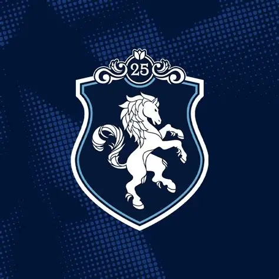
Team Liquid
Com tradição, excelência e conquistas internacionais, a Team Liquid é uma das organizações mais respeitadas da história dos eSports. Presente em diversas modalidades, reúne atletas de elite e uma estrutura que serve de referência para o cenário competitivo mundial.
Jogos em destaque


Jerseys marcantes da Team Liquid
Ao longo dos anos, a Team Liquid consolidou uma identidade visual marcante, utilizando o azul-marinho e o branco como símbolos de tradição, excelência e competitividade nos maiores palcos do eSports mundial.
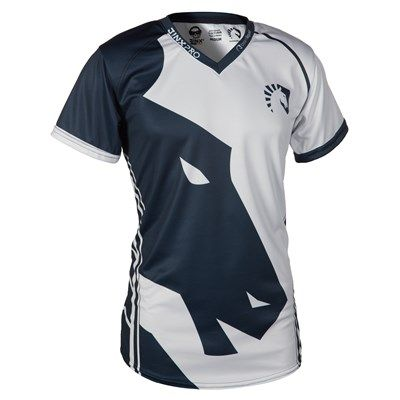
2017
A era do The International
Foi um dos anos mais importantes da história da Team Liquid. A organização conquistou o The International 2017 em Dota 2, consolidando seu nome entre as maiores do mundo.
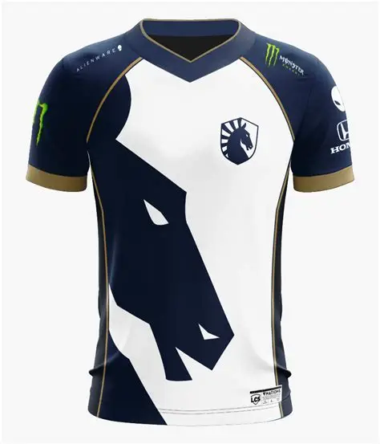
2019
Domínio internacional
A jersey de 2019 acompanhou uma fase de enorme destaque em diversas modalidades, especialmente no Counter-Strike e em League of Legends, tornando-se uma das mais reconhecidas pelos torcedores.
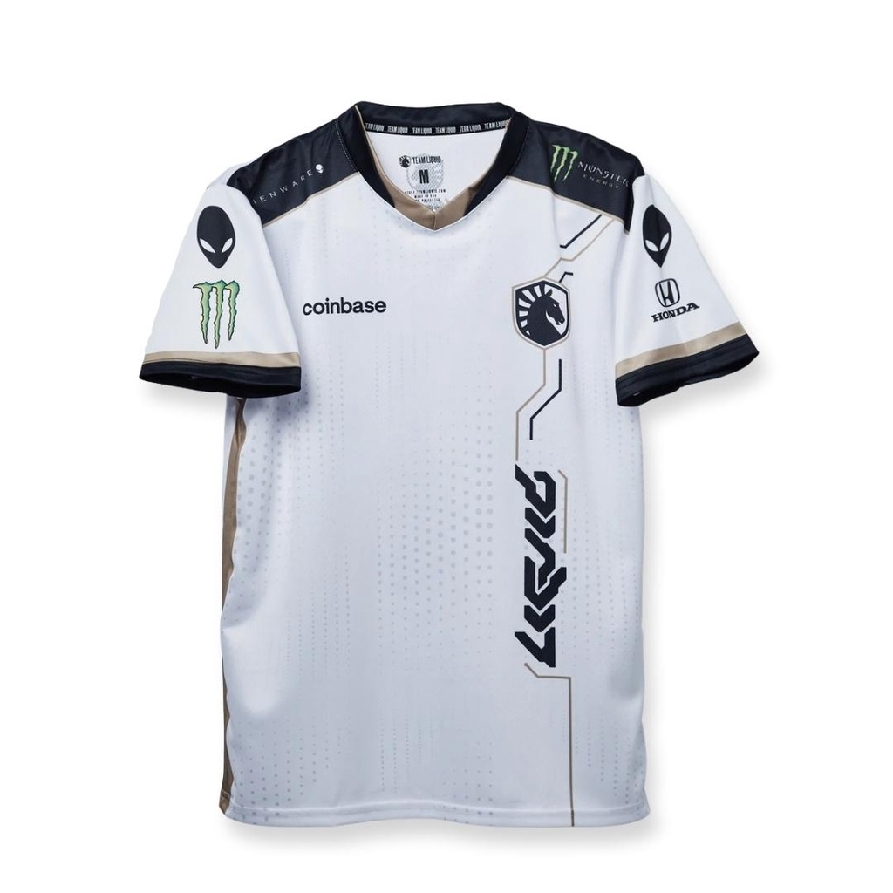
2022
Identidade modernizada
Com um visual mais limpo e sofisticado, a Team Liquid atualizou sua identidade mantendo o tradicional azul-marinho, reforçando sua imagem como uma organização global.
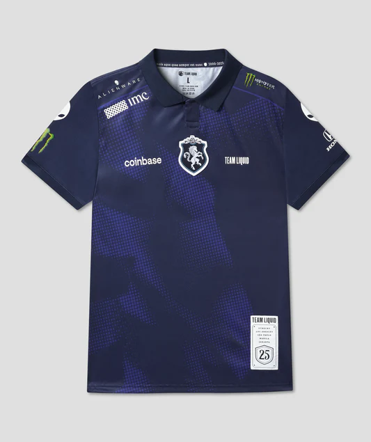
2025
Jersey comemorativa de 25 anos
A edição especial de 25 anos homenageia toda a trajetória da Team Liquid desde sua fundação. Com detalhes dourados e um design premium, tornou-se uma das jerseys mais elogiadas pela comunidade e uma das peças mais marcantes da história da organização.
Jogadores em destaque nos últimos anos
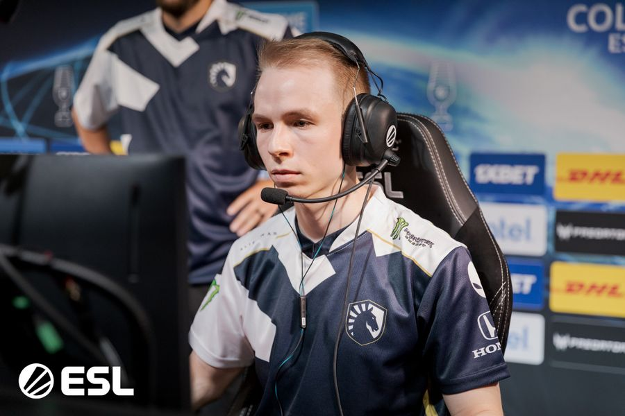
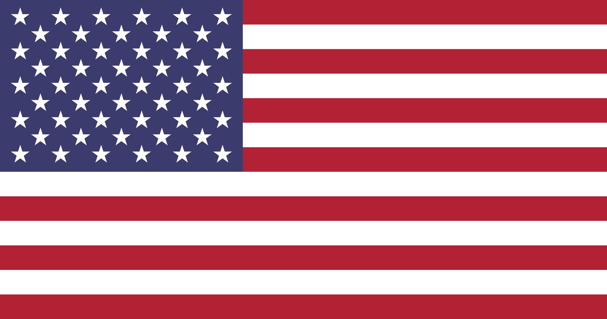
Jonathan "EliGE" JablonowskiUm dos maiores jogadores da história da Team Liquid. Foi peça fundamental na era de ouro da organização no Counter-Strike, conquistando diversos títulos internacionais e ajudando a equipe a alcançar o Grand Slam da ESL.
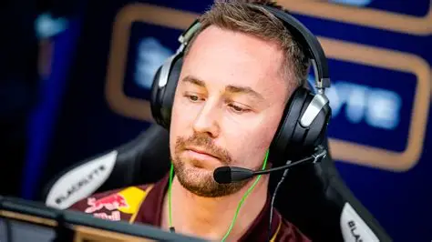
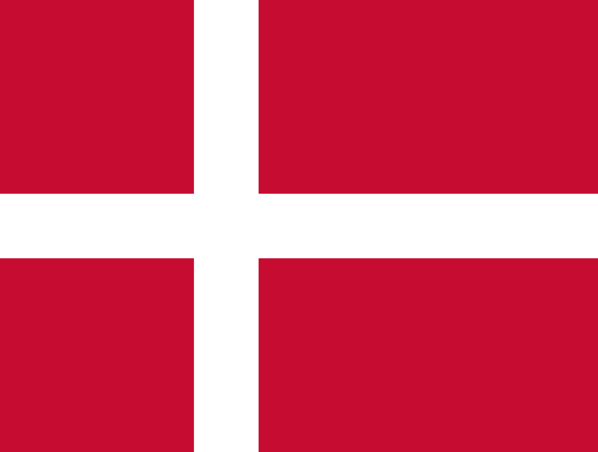
Casper "cadiaN" MøllerConhecido pela liderança e pela capacidade de comandar equipes vencedoras. Tornou-se um dos nomes mais reconhecidos da Team Liquid no Counter-Strike moderno.

Yiliang "Doublelift" Peng
Maior ídolo da Team Liquid no League of Legends. Conquistou diversos títulos da LCS e foi protagonista de uma das fases mais dominantes da organização na modalidade.
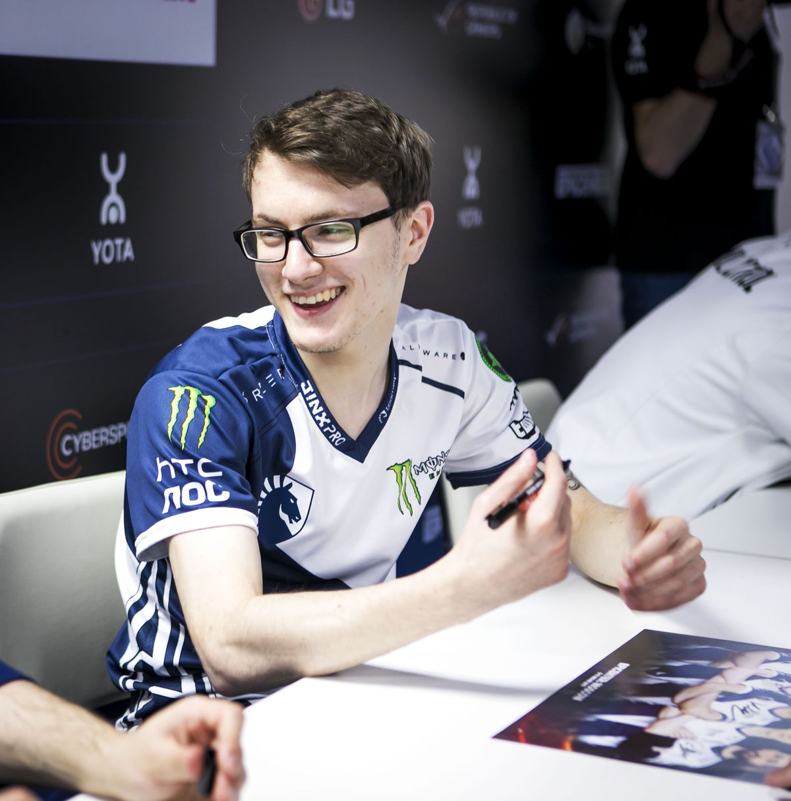
 Amer "Miracle-" Al-Barkawi
Amer "Miracle-" Al-Barkawi
Considerado um dos jogadores mais talentosos da história do Dota 2, foi um dos protagonistas da conquista do The International 2017, o maior título da modalidade.
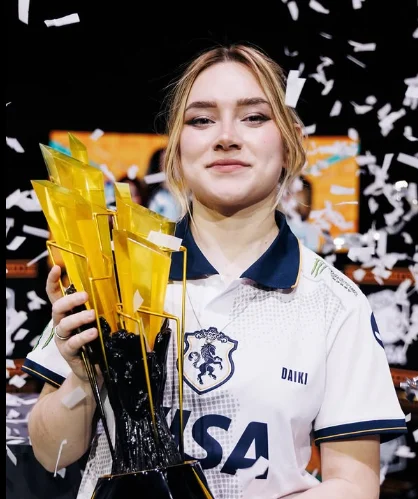
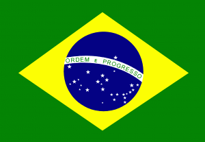
Natália "daiki" VilelaCapitã e IGL da Team Liquid Brazil. É considerada uma das maiores líderes do cenário inclusivo de VALORANT e comandou a equipe na conquista do Game Changers Championship 2025.
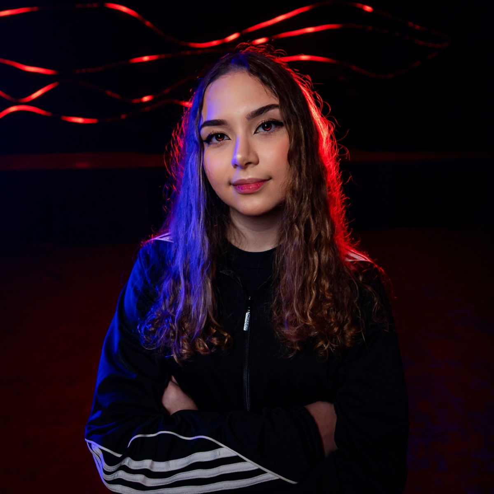
Isabeli "isaa" Esser
Jogadora de grande impacto tático, conhecida pela inteligência durante as partidas e por sua importância na construção do estilo de jogo da equipe.
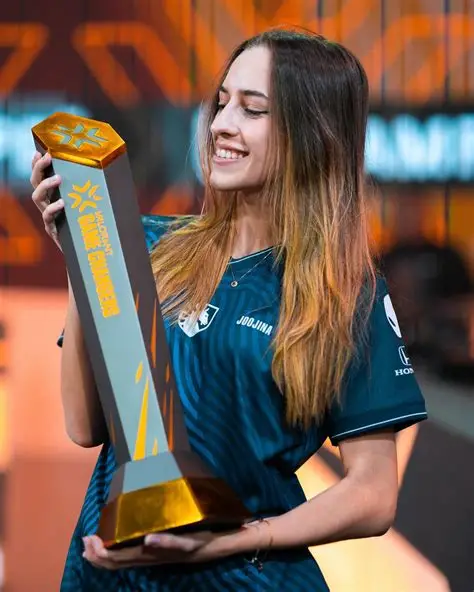
Letícia "Joojina" Paiva
Uma das integrantes mais importantes da line-up atual de valorant, conhecida pela adaptação e consistência em momentos decisivos, ajudando a Team Liquid Brazil a se manter entre as melhores equipes do cenário.
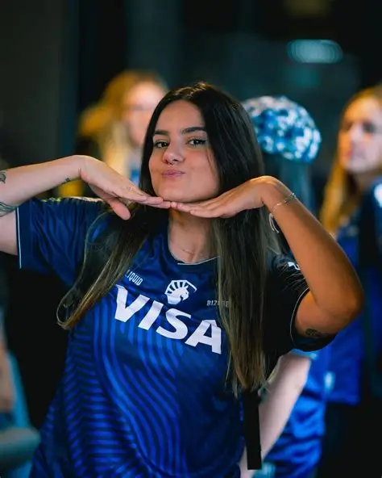
Vitória "bizerra" Vieira
Uma das jogadoras mais consistentes da equipe de Valorant. Destaque pela versatilidade e pelo alto nível mecânico, sendo uma peça fundamental nas campanhas vitoriosas da Team Liquid Brazil.